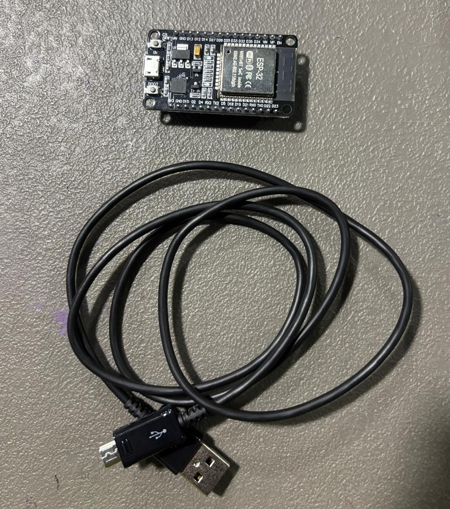
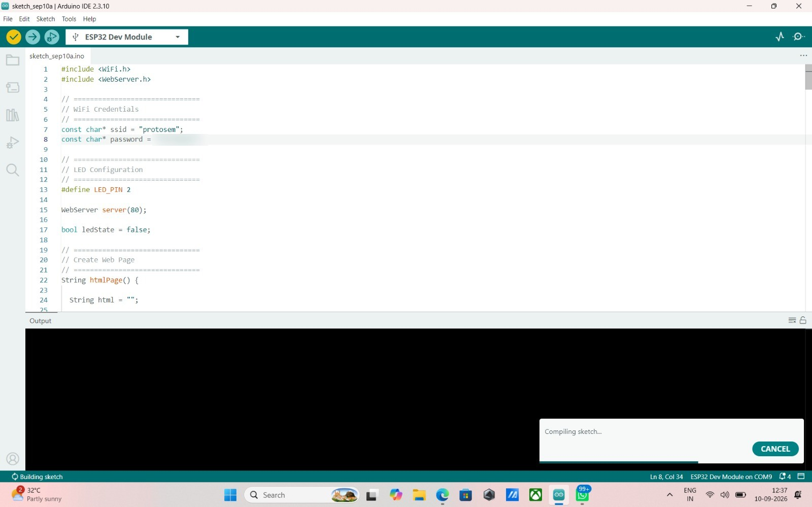
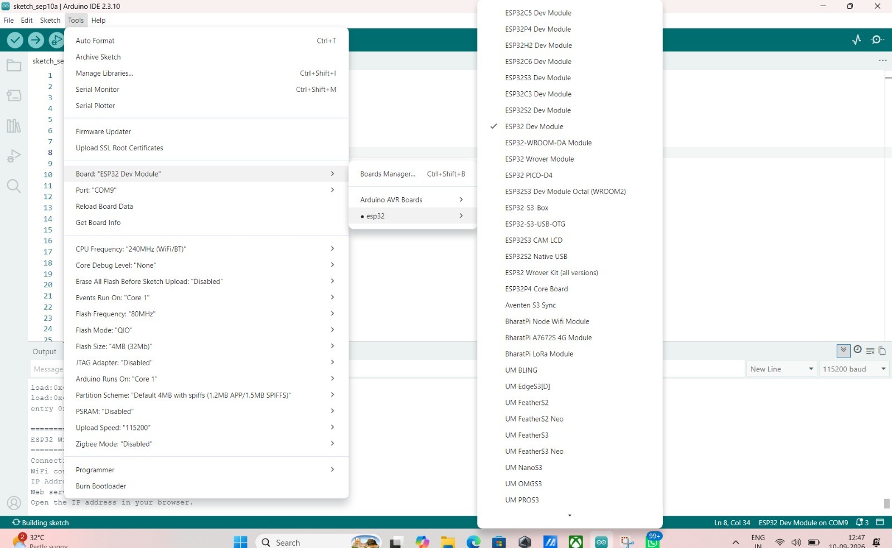
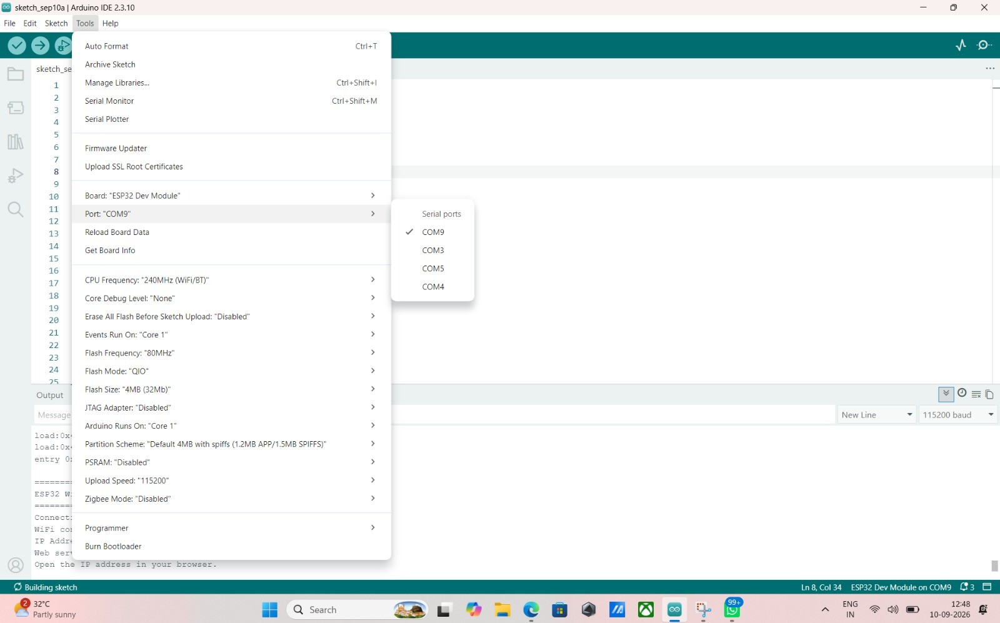
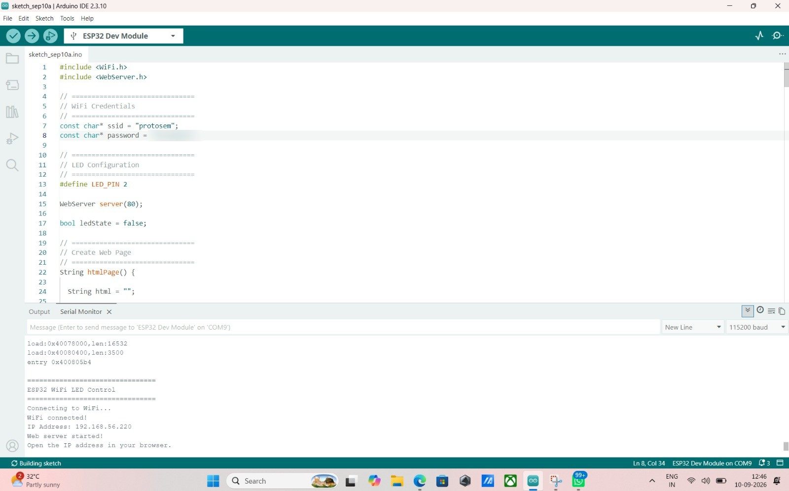
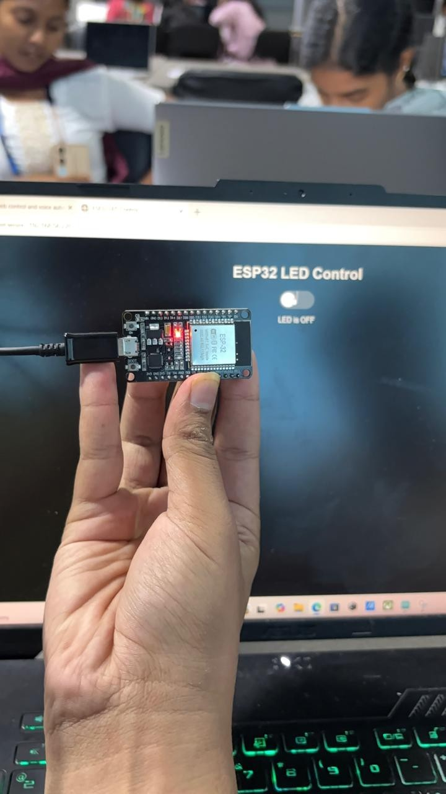
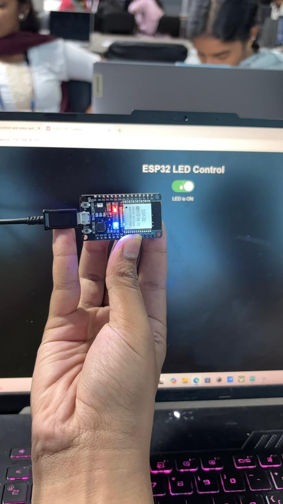
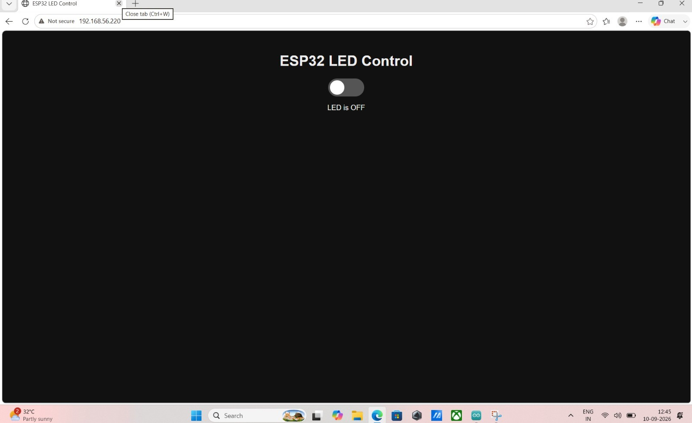

01Overview
The ESP32 joins the local Wi-Fi network and runs a small HTTP web server. A browser on the same network opens the ESP32's IP address, sees a page with ON and OFF buttons, and each button press switches the ESP32's onboard LED on GPIO 2.
02Concepts
ESP32 web server
The ESP32 has built-in Wi-Fi, so it can listen for HTTP requests on port 80 and reply with an HTML page, just like a tiny website.
Browser ↔ ESP32
The browser sends an HTTP GET request to the board's IP address. The ESP32 answers with HTML. Both devices must be on the same network.
Sending a command
Each button links to a URL such as /on or /off. When the ESP32 receives that route it sets the GPIO pin HIGH or LOW and returns the page again.
03System Design
04Hardware & Software
Hardware
- ESP32 development board (ESP32 Dev Module)
- Micro-USB cable for power and programming
- Onboard LED on GPIO 2 (no external parts needed)

Software & platforms
- Arduino IDE
- ESP32 board package
- WiFi.h and WebServer.h libraries
- Any web browser on the same network
05Wiring / Setup
This task uses the board's onboard LED, so no extra wiring is needed.
| ESP32 pin | Connects to | Purpose |
|---|---|---|
| GPIO 2 | Onboard LED | LED control output |
| USB port | Laptop | Power and programming |
06Implementation
#include <WiFi.h>
#include <WebServer.h>
// ================================
// WiFi Credentials
// ================================
const char* ssid = "YOUR_WIFI_NAME";
const char* password = "YOUR_WIFI_PASSWORD";
// ================================
// LED Configuration
// ================================
#define LED_PIN 2
WebServer server(80);
bool ledState = false;
// ================================
// Create Web Page
// ================================
String htmlPage() {
String html = "";
html += "<!DOCTYPE html><html><head><title>ESP32 LED Control</title>";
html += "<style>body{background:#000;color:#fff;text-align:center;font-family:Arial;padding-top:80px;}";
html += "h1{font-size:28px;} .switch{position:relative;display:inline-block;width:60px;height:34px;}";
html += ".switch input{display:none;} .slider{position:absolute;top:0;left:0;right:0;bottom:0;background:#555;border-radius:34px;transition:.3s;cursor:pointer;}";
html += ".slider:before{position:absolute;content:'';height:26px;width:26px;left:4px;bottom:4px;background:white;border-radius:50%;transition:.3s;}";
html += "input:checked + .slider{background:#4CAF50;} input:checked + .slider:before{transform:translateX(26px);}</style></head><body>";
html += "<h1>ESP32 LED Control</h1>";
html += "<label class='switch'><input type='checkbox' id='ledSwitch' onchange='toggleLED()' " + String(ledState ? "checked" : "") + "><span class='slider'></span></label>";
html += "<p id='status'>LED is " + String(ledState ? "ON" : "OFF") + "</p>";
html += "<script>function toggleLED(){var xhr=new XMLHttpRequest();var state=document.getElementById('ledSwitch').checked;";
html += "xhr.open('GET', state ? '/on' : '/off', true);xhr.onload=function(){document.getElementById('status').innerText='LED is '+(state?'ON':'OFF');};xhr.send();}</script>";
html += "</body></html>";
return html;
}
// ================================
// Route Handlers
// ================================
void handleRoot() { server.send(200, "text/html", htmlPage()); }
void handleOn() { ledState = true; digitalWrite(LED_PIN, HIGH); server.send(200, "text/plain", "LED is ON"); }
void handleOff() { ledState = false; digitalWrite(LED_PIN, LOW); server.send(200, "text/plain", "LED is OFF"); }
void setup() {
Serial.begin(115200);
pinMode(LED_PIN, OUTPUT);
digitalWrite(LED_PIN, LOW);
Serial.println("================================");
Serial.println("ESP32 WiFi LED Control");
Serial.println("================================");
Serial.print("Connecting to WiFi...");
WiFi.begin(ssid, password);
while (WiFi.status() != WL_CONNECTED) {
delay(500);
Serial.print(".");
}
Serial.println();
Serial.println("WiFi connected!");
Serial.print("IP Address: ");
Serial.println(WiFi.localIP());
server.on("/", handleRoot);
server.on("/on", handleOn);
server.on("/off", handleOff);
server.begin();
Serial.println("Web server started!");
Serial.println("Open the IP address in your browser.");
}
void loop() {
server.handleClient();
}Key sections of the code:
- Include the Wi-Fi and WebServer libraries
- Wi-Fi name and password
- Create the server object on port 80
- Route handlers for the page, /on and /off
- setup() connects to Wi-Fi and starts the server; loop() calls handleClient()

07Configuration
- Select ESP32 Dev Module in Tools → Board
- Select the correct COM port in Tools → Port (COM9 here)
- Open the Serial Monitor at 115200 baud to read the IP address



08Evidence



09Challenges & Fixes
- The IP address kept changing between test runs. The first time I ran the sketch I bookmarked the IP from the Serial Monitor, but after restarting the router the ESP32 was handed a different address by DHCP and the old bookmark just timed out. I got into the habit of re-opening the Serial Monitor after every power cycle and reading the printed
WiFi.localIP()line before touching the browser, instead of assuming the address would stay the same. - The LED didn’t respond the first time I toggled it. I’d initially written the sketch expecting an external LED on a GPIO pin with a resistor, the way most tutorials set it up, but the ESP32 Dev Module I’m using only has the onboard LED wired to GPIO 2. Nothing happened when I hit the switch because I was driving the wrong assumption, not the wrong pin. Once I set
LED_PINto 2 and pointed the code at the onboard LED instead of external wiring, it toggled correctly on both the board and the web page. - The page wouldn’t load on my phone at first. My laptop was on the protosem Wi-Fi network but my phone had fallen back to mobile data, so the IP printed in the Serial Monitor was unreachable from it. The fix was just making sure both devices were joined to the same network before entering the address — an easy thing to overlook since the browser gives no error explaining why the page won’t load.
10Reflection
Building this made the request/response cycle feel concrete instead of abstract. Every time I tap the toggle, the browser fires off a plain GET request to /on or /off, the ESP32’s WebServer matches that path to a handler, flips the pin, and sends a short text response back — there’s no magic in between, just a tiny device on my network answering HTTP requests the same way a real web server would. Watching the Serial Monitor log each request as I clicked the switch made it obvious that the “web” here is really just my laptop and the ESP32 talking directly to each other over Wi-Fi.
If I were to take this further, I’d add proper state feedback instead of trusting the client-side toggle blindly — right now the page assumes the request succeeded rather than confirming the LED’s actual state. I’d also like to control more than one LED from the same page, and add at least basic authentication before opening this up to anything beyond a closed classroom network, since right now anyone on the same Wi-Fi can hit /on and /off with no login at all.
11Repository Link
Source code for this task is on GitHub.
Open Task 1 on GitHub →Other tasks
Adafruit IO Dashboard & MQTT
Control the LED from an Adafruit IO cloud dashboard using MQTT.
Task 3IFTTT + Adafruit IO IoT Automation
Trigger an IFTTT applet that drives an Adafruit IO feed and the ESP32 automatically.
Task 4Firebase IoT Monitoring Dashboard
Monitor temperature, humidity and light in a login-protected Firebase dashboard and control a bulb.
Task 5Firebase Logging, Automation & Data Export
The complete system: automatic LDR lighting, Firebase data logging, charts and CSV export.